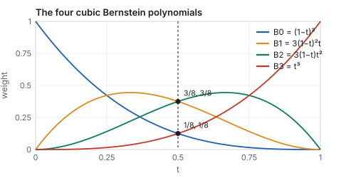
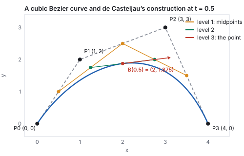
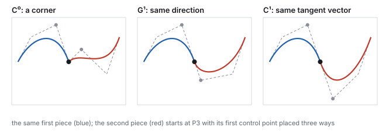
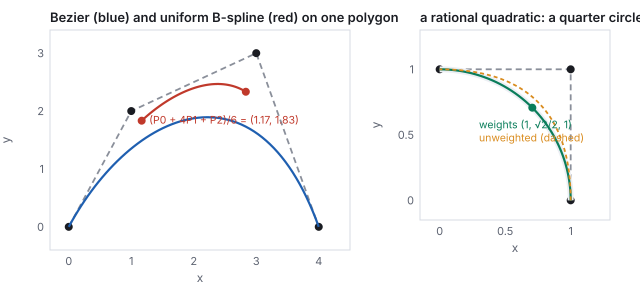
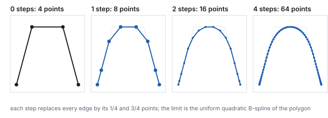
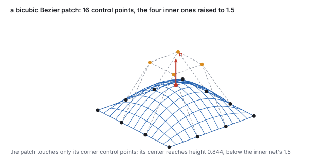
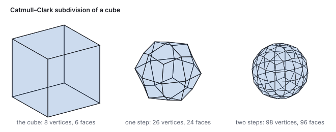

This chapter links to the course’s interactive demos and uses MathJax for its
formulas. Read it through the course website (or download the file and open it in a
browser); a Canvas inline preview will reach neither the demos nor the math.
All chapters.
Curves and Surfaces: Bézier, B-Splines, Subdivision
CSS 551 · Advanced 3D Computer Graphics · course text
Course text · smooth shapes from a few control points: the Bézier curve and de Casteljau’s construction, joining pieces with continuity, B-splines and their rational form, corner cutting, the bicubic patch, and Catmull–Clark subdivision. Not tied to a lecture; read it with the meshes chapter and before the animation chapter.
A triangle mesh is a list of flat pieces. A designer does not think in flat pieces; a designer moves a handful of points and expects a smooth shape to follow. This chapter is the mathematics of that expectation. A cubic Bézier curve is four control points blended by four polynomials, and de Casteljau’s construction evaluates it with nothing but repeated midpoints; the chapter works one curve both ways at \(t = 0.5\) and reads its tangent off the construction. Longer shapes are pieces joined with a continuity condition, or a B-spline whose control points act locally, or a rational curve that can be an exact circle. The same ideas one dimension up give the bicubic patch of the Utah teapot, and the same corner-cutting idea applied to a polygon and then to a cube gives subdivision curves and surfaces, with the cube’s first Catmull–Clark step worked by hand. The meshes that get rendered are still triangles; these are the shapes they approximate.
Definition (parametric curve)
A parametric curve is a function \(\mathbf{c}(t)\) from a parameter interval, usually \([0, 1]\), to
points in the plane or in space. Its derivative \(\mathbf{c}'(t)\) is the tangent (the velocity, if
\(t\) is time). A polynomial curve has polynomial coordinate functions; a cubic has degree 3
in each.
The alternatives are worse for drawing. An explicit form \(y = f(x)\) cannot turn back on itself; an
implicit form \(F(x, y) = 0\) says whether a point is on the curve but not how to walk along it. A
parametric curve is walked by stepping \(t\), which is exactly what a renderer needs to turn it into
line segments and what an animator needs to move an object along it. Polynomials are the choice
because they are cheap to evaluate, closed under the affine transforms of
the affine chapter, and easy to differentiate. Cubics are the
usual degree: the lowest that can bend twice (an S) and that can be joined with matching tangents at
both ends.
2 · Bézier curves and de Casteljau’s construction
Definition (cubic Bézier curve)
For control points \(\mathbf{P}_0, \mathbf{P}_1, \mathbf{P}_2, \mathbf{P}_3\),
\[
\mathbf{B}(t) = (1-t)^3\,\mathbf{P}_0 + 3(1-t)^2 t\,\mathbf{P}_1 + 3(1-t)t^2\,\mathbf{P}_2 + t^3\,\mathbf{P}_3, \qquad t \in [0, 1].
\]
The four weights are the cubic Bernstein polynomials \(B_i(t)\); they are non-negative on
\([0,1]\) and sum to 1 (expand \(((1-t) + t)^3\)), so \(\mathbf{B}(t)\) is a weighted average of the
control points.

The four Bernstein weights. At \(t = 0\) only \(\mathbf{P}_0\) counts, at \(t = 1\) only \(\mathbf{P}_3\); in between the inner points pull without ever being reached.
Four consequences read off the definition. The curve interpolates its ends,
\(\mathbf{B}(0) = \mathbf{P}_0\) and \(\mathbf{B}(1) = \mathbf{P}_3\), and passes through no other
control point in general. Its end tangents are \(\mathbf{B}'(0) = 3(\mathbf{P}_1 - \mathbf{P}_0)\)
and \(\mathbf{B}'(1) = 3(\mathbf{P}_3 - \mathbf{P}_2)\): the curve leaves \(\mathbf{P}_0\) toward
\(\mathbf{P}_1\) and arrives at \(\mathbf{P}_3\) from \(\mathbf{P}_2\), which is why dragging the inner
points feels like bending the ends. Because the weights are a partition of unity, the curve stays in
the convex hull of its control points, and an affine transform of the points transforms the
curve (affine invariance): to move a curve, move its four points. And a straight line crosses
the curve no more often than it crosses the control polygon (variation diminishing): the
curve wiggles less than its polygon.
De Casteljau’s construction
Interpolate each consecutive pair of control points at \(t\), giving three points; interpolate those,
giving two; interpolate those, giving one. The last point is \(\mathbf{B}(t)\), and the last two
points span its tangent: \(\mathbf{B}'(t) = 3\,(\mathbf{Q}_1 - \mathbf{Q}_0)\) where \(\mathbf{Q}_0, \mathbf{Q}_1\)
are the level-two points. Repeated linear interpolation, and nothing else, evaluates the curve.

De Casteljau’s construction at \(t = 0.5\): midpoints of the polygon (orange), midpoints of those (green), and the midpoint of those (red), which lies on the curve with the green segment as its tangent.
Worked example (one curve, two ways)
\(\mathbf{P}_0 = (0, 0)\), \(\mathbf{P}_1 = (1, 2)\), \(\mathbf{P}_2 = (3, 3)\), \(\mathbf{P}_3 = (4, 0)\), at
\(t = 0.5\). By the construction, the level-one points are the polygon’s midpoints
\((0.5, 1)\), \((2, 2.5)\), \((3.5, 1.5)\); level two, their midpoints \((1.25, 1.75)\), \((2.75, 2)\); level
three, \((2, 1.875)\). By the formula, the weights at \(t = 0.5\) are
\((\tfrac18, \tfrac38, \tfrac38, \tfrac18)\), so
\(\mathbf{B}(0.5) = \tfrac18(0,0) + \tfrac38(1,2) + \tfrac38(3,3) + \tfrac18(4,0)
= (\tfrac{3 + 9 + 4}{8}, \tfrac{6 + 9}{8}) = (2, 1.875)\). Same point. The tangent is
\(3\,((2.75, 2) - (1.25, 1.75)) = (4.5, 0.75)\): moving right and slightly up, past the top of the
arch. At \(t = 0.25\) the weights are \((0.4219, 0.4219, 0.1406, 0.0156)\) and the point is
\((0.906, 1.266)\). The end tangents are \(3(\mathbf{P}_1 - \mathbf{P}_0) = (3, 6)\) and
\(3(\mathbf{P}_3 - \mathbf{P}_2) = (3, -9)\).
The construction also splits the curve: the points down the left side of the triangle
(\(\mathbf{P}_0\), \((0.5, 1)\), \((1.25, 1.75)\), \((2, 1.875)\)) are the control points of the piece on
\([0, 0.5]\), and the right side gives the piece on \([0.5, 1]\). Split a few times and the control
polygons approach the curve, which is how a Bézier curve is drawn without ever evaluating a
cubic. The same construction with \(n + 1\) control points and \(n\) levels gives the degree-\(n\)
curve; degree 2 (three points) is common in fonts, degree 3 nearly everywhere else.
3 · Joining pieces: continuity
One cubic cannot do much. Long shapes are chains of cubic pieces, and what matters is how each piece
meets the next. Two pieces are \(C^0\) if they share the endpoint; \(C^1\) if their tangent
vectors match there (same direction and same length, so a point moving along them at
constant \(t\) has continuous velocity); \(G^1\) if only the tangent directions match (the
shape is smooth, the speed may jump); \(C^2\) if the second derivatives match too, which is what a
highlight sliding across a car body needs in order not to kink.

The same first piece and three second pieces. The join is a corner, tangent-continuous in direction only, or tangent-continuous in the full vector, according to where \(\mathbf{Q}_1\) sits relative to \(\mathbf{P}_2\) and \(\mathbf{P}_3\).
Worked example (placing the fourth point)
The first piece ends at \(\mathbf{P}_3 = (4, 0)\) with tangent \(3(\mathbf{P}_3 - \mathbf{P}_2) = (3, -9)\).
A second piece \(\mathbf{Q}_0\mathbf{Q}_1\mathbf{Q}_2\mathbf{Q}_3\) with \(\mathbf{Q}_0 = \mathbf{P}_3\) starts
with tangent \(3(\mathbf{Q}_1 - \mathbf{Q}_0)\). For \(C^1\), \(\mathbf{Q}_1 - \mathbf{P}_3 = \mathbf{P}_3 - \mathbf{P}_2\),
so \(\mathbf{Q}_1 = (5, -3)\): the two inner points mirror through the join. For \(G^1\) any point on
that ray works, for instance \(\mathbf{Q}_1 = (4.5, -1.5)\), whose tangent \((1.5, -4.5)\) is half as long
in the same direction. \(\mathbf{Q}_1 = (5, 1)\) gives tangent \((3, 3)\), a corner. Drawing tools show the
mirror rule as the two handles of a point that move together.
Chains are usually specified differently. A Hermite piece is given by its two endpoints and
the two tangent vectors there,
\[
\mathbf{h}(s) = (2s^3 - 3s^2 + 1)\,\mathbf{p}_a + (s^3 - 2s^2 + s)\,\mathbf{m}_a + (-2s^3 + 3s^2)\,\mathbf{p}_b + (s^3 - s^2)\,\mathbf{m}_b,
\]
which is the Bézier piece with \(\mathbf{P}_1 = \mathbf{p}_a + \mathbf{m}_a/3\) and
\(\mathbf{P}_2 = \mathbf{p}_b - \mathbf{m}_b/3\). A Catmull–Rom spline through points
\(\mathbf{p}_0, \mathbf{p}_1, \ldots\) is a chain of Hermite pieces with the tangent at each point set
to half the chord between its neighbors, \(\mathbf{m}_i = \tfrac12(\mathbf{p}_{i+1} - \mathbf{p}_{i-1})\):
\(C^1\) by construction and passing through every point, which is what an animator wants of a path
through keyframes. The animation chapter works the keyframe
demo’s spline this way.
4 · B-splines, and rational curves
A Bézier chain has a defect for design: moving one control point changes the whole piece, and
\(C^2\) joins impose constraints the designer must maintain by hand. The B-spline trades
interpolation for both. Its pieces use the same four-point blend with a different basis, and every
control point influences exactly four consecutive pieces.
Definition (uniform cubic B-spline piece)
For consecutive control points \(\mathbf{P}_0, \ldots, \mathbf{P}_3\) and \(u \in [0,1]\),
\[
\mathbf{S}(u) = \tfrac16\Bigl[(1-u)^3\,\mathbf{P}_0 + (3u^3 - 6u^2 + 4)\,\mathbf{P}_1 + (-3u^3 + 3u^2 + 3u + 1)\,\mathbf{P}_2 + u^3\,\mathbf{P}_3\Bigr].
\]
The next piece uses \(\mathbf{P}_1, \ldots, \mathbf{P}_4\), and consecutive pieces meet with \(C^2\)
continuity automatically. The weights are again non-negative and sum to 1.
Worked example (the same polygon as a B-spline)
With the four points of Section 2, at \(u = 0\) the weights are \((\tfrac16, \tfrac46, \tfrac16, 0)\), so
\(\mathbf{S}(0) = \tfrac16\bigl[(0,0) + 4(1,2) + (3,3)\bigr] = (\tfrac76, \tfrac{11}6) = (1.167, 1.833)\),
and at \(u = 1\), \(\mathbf{S}(1) = \tfrac16\bigl[(1,2) + 4(3,3) + (4,0)\bigr] = (2.833, 2.333)\). The piece
runs from a point near \(\mathbf{P}_1\) to a point near \(\mathbf{P}_2\) and never touches the polygon.
At \(u = 0.5\) the weights are \((0.0208, 0.4792, 0.4792, 0.0208)\), almost entirely on the two middle
points, and \(\mathbf{S}(0.5) = (2, 2.396)\), higher than the Bézier curve’s \((2, 1.875)\)
because it hugs \(\mathbf{P}_1\) and \(\mathbf{P}_2\).

Left: Bézier and B-spline pieces on one polygon. Right: a quadratic Bézier with the middle weight \(\sqrt2/2\) is an exact quarter circle; without the weight it is a parabola that cuts inside.
The general B-spline has a knot vector that spaces the pieces in \(u\) and can repeat knots
to pin the curve to a control point (a Bézier curve is a B-spline with all knots repeated four
times at each end). Its polynomial pieces cannot represent a circle exactly: no polynomial
parametrization traces a circle. The fix is to divide, giving rational curves, and with
knots, NURBS (non-uniform rational B-splines), the representation of every CAD system.
Worked example (a circle from three points and a weight)
Control points \(\mathbf{C}_0 = (1, 0)\), \(\mathbf{C}_1 = (1, 1)\), \(\mathbf{C}_2 = (0, 1)\), quadratic weights
\((1-t)^2, 2(1-t)t, t^2\), and point weights \(w = (1, \tfrac{\sqrt2}{2}, 1)\):
\[
\mathbf{r}(t) = \frac{\sum_i B_i(t)\, w_i\, \mathbf{C}_i}{\sum_i B_i(t)\, w_i}.
\]
At \(t = 0.5\): the basis is \((0.25, 0.5, 0.25)\); the numerator is
\(0.25(1,0) + 0.5\cdot0.7071(1,1) + 0.25(0,1) = (0.6036, 0.6036)\); the denominator is
\(0.25 + 0.3536 + 0.25 = 0.8536\); the point is \((0.7071, 0.7071)\), at distance exactly 1 from the
origin. At \(t = 0.25\) the point is \((0.930, 0.368)\), also at distance 1. Without the weight, the
midpoint is \((0.75, 0.75)\), at distance 1.06: a parabola. The weight is a fourth homogeneous
coordinate, and the division is the projective divide of the affine chapter, which is why a rational
curve is exactly a polynomial curve in homogeneous space projected down.
5 · Corner cutting: subdivision curves
There is a third way to get a smooth curve from a polygon, and it needs no basis functions at all.
Chaikin’s algorithm (1974) replaces every edge of the polygon by its points at one quarter and
three quarters, discarding the old vertices. Each step doubles the point count and cuts every corner;
the limit is a smooth curve. It is, in fact, exactly the uniform quadratic B-spline of the original
polygon, and the subdivision rule is what the B-spline’s refinement property looks like when
written as geometry.

Chaikin’s corner cutting on a four-point polygon. After four steps the polyline is indistinguishable from its limit curve at this scale.
Worked example (one step)
Polygon \((0,0), (1,3), (3,3), (4,0)\), ends kept. The edge from \((0,0)\) to \((1,3)\) contributes
\((0.25, 0.75)\) and \((0.75, 2.25)\); the top edge contributes \((1.5, 3)\) and \((2.5, 3)\); the last
edge \((3.25, 2.25)\) and \((3.75, 0.75)\). Eight points after one step, sixteen after two, sixty-four
after four. The limit curve passes through the midpoint \((0.5, 1.5)\) of the first edge, as a uniform
quadratic B-spline passes through the midpoints of its control polygon.
6 · Surfaces: the bicubic patch
Definition (bicubic Bézier patch)
For a \(4\times4\) net of control points \(\mathbf{P}_{ij}\),
\[
\mathbf{S}(u, v) = \sum_{i=0}^{3}\sum_{j=0}^{3} B_i(u)\,B_j(v)\,\mathbf{P}_{ij}, \qquad (u, v) \in [0,1]^2,
\]
a tensor product: a Bézier curve in \(u\) whose four control points are themselves
Bézier curves in \(v\). The partial derivatives \(\mathbf{S}_u\) and \(\mathbf{S}_v\) are the
tangents; their cross product is the normal.

A bicubic patch. The surface interpolates the four corners of the net and is pulled toward, never onto, the twelve other points.
Worked example (the center of a patch)
Control points \(\mathbf{P}_{ij} = (i, h_{ij}, j)\) on a unit grid, with the four inner heights 1.5 and
the twelve outer heights 0. At \((u, v) = (0.5, 0.5)\) every Bernstein weight is \(\tfrac18\) or
\(\tfrac38\), and the height is
\(\sum_{ij} B_i B_j h_{ij} = 4\cdot\tfrac38\cdot\tfrac38\cdot1.5 = 0.844\): the center point is
\((1.5, 0.844, 1.5)\), just over half the height of the inner net. The tangents there are
\(\mathbf{S}_u = (3, 0, 0)\) and \(\mathbf{S}_v = (0, 0, 3)\) (by the symmetry of the heights), so the normal
is straight up. At \((0.25, 0.5)\) the point is \((0.75, 0.633, 1.5)\), \(\mathbf{S}_u = (3, 1.687, 0)\),
and the unit normal \(\mathbf{S}_v\times\mathbf{S}_u / |\cdot| = (-0.49, 0.872, 0)\), leaning back toward
the lower edge as the slope says it should.
The Utah teapot, the course’s test model since the
Utah era, is 32 of these patches; a renderer tessellates each into a grid of triangles by
evaluating \(\mathbf{S}\) on a lattice of \((u, v)\), exactly the sweep-and-index construction of
the meshes chapter, and computes normals from the tangents rather than
from the triangles. Joining patches with continuity is harder than joining curves: \(C^1\) across an
edge constrains two rows of control points, and around a vertex where other than four patches meet
it cannot be done in general. That difficulty is what the next section removes.
7 · Subdivision surfaces: Catmull–Clark
Chaikin’s idea in two dimensions: start from any polygon mesh, insert points and reconnect by a
fixed rule, repeat, and the limit is a smooth surface. Catmull and Clark’s rule (1978) works on
meshes of arbitrary faces and produces quads; Loop’s rule (1987) works on triangles. Both give a
surface that is \(C^2\) almost everywhere and \(C^1\) at the extraordinary vertices where the
valence is not the regular one, and neither needs the designer to manage continuity: a coarse
control cage is the whole specification.
Definition (one Catmull–Clark step)
For each face, a face point: the average of its vertices. For each edge, an edge
point: the average of its two endpoints and the two adjacent face points. For each old vertex
\(\mathbf{V}\) of valence \(n\), with \(\mathbf{F}\) the average of the adjacent face points and
\(\mathbf{R}\) the average of the midpoints of the adjacent edges, the new vertex point
\[
\mathbf{V}' = \frac{\mathbf{F} + 2\mathbf{R} + (n - 3)\,\mathbf{V}}{n}.
\]
Each old face with \(k\) sides becomes \(k\) quads, each joining a vertex point, two edge points and
the face point.

A cube under Catmull–Clark subdivision. The eight corners of the cage are extraordinary vertices of valence 3; everything inserted later has valence 4.
Worked example (the cube’s corner)
The cube with vertices at \((\pm1, \pm1, \pm1)\). Every face point is a face center, for the top face
\((0, 1, 0)\). The edge from \((1, 1, 1)\) to \((1, 1, -1)\) has endpoints averaging to \((1, 1, 0)\) and
adjacent face points \((1, 0, 0)\) and \((0, 1, 0)\), so its edge point is
\(\tfrac14\bigl[(1,1,1) + (1,1,-1) + (1,0,0) + (0,1,0)\bigr] = (0.75, 0.75, 0)\). The corner
\(\mathbf{V} = (1, 1, 1)\) has valence \(n = 3\); its three face points average to
\(\mathbf{F} = (\tfrac13, \tfrac13, \tfrac13)\) and its three edge midpoints \((1,1,0), (1,0,1), (0,1,1)\)
average to \(\mathbf{R} = (\tfrac23, \tfrac23, \tfrac23)\); with \(n - 3 = 0\) the old position drops out and
\(\mathbf{V}' = \tfrac13(\mathbf{F} + 2\mathbf{R}) = (\tfrac59, \tfrac59, \tfrac59) = (0.556, 0.556, 0.556)\).
The corner pulls in by almost half. Counts: 6 face points, 12 edge points and 8 vertex points make
26 vertices; each of the 6 faces yields 4 quads, 24 faces; 48 edges. A second step gives 98 vertices
and 96 faces, a third 386 and 384: four times the faces per step, as for any quad mesh.
The limit surface of a cube is not a sphere, but it is a smooth blob, and adding cage vertices near a
corner sharpens it; tagging an edge as a crease modifies the rule along it to keep a sharp fold.
Film characters have been subdivision cages since Pixar’s Geri’s Game (1997), and
every modeling tool has the button; a renderer tessellates the cage to the pixel-appropriate depth
with the same counts as above, which is a level-of-detail scheme for free. The output is, once more,
triangles.
Papers
P. de Casteljau, Courbes et surfaces à pôles, Citroën technical report, 1963.
P. Bézier, “Définition numérique des courbes et surfaces,” Automatisme 11,
1966. G. Chaikin, “An Algorithm for High-Speed Curve Generation,” Computer Graphics and Image
Processing 3(4), 1974. E. Catmull and J. Clark, “Recursively Generated B-Spline Surfaces on
Arbitrary Topological Meshes,” Computer-Aided Design 10(6), 1978. C. Loop, Smooth Subdivision
Surfaces Based on Triangles, master’s thesis, University of Utah, 1987. T. DeRose, M. Kass and
T. Truong, “Subdivision Surfaces in Character Animation,” SIGGRAPH 1998.
8 · Exercises
Exercise 1 (de Casteljau)
Evaluate the curve of Section 2 at \(t = 0.25\) by the construction and check against the Bernstein result \((0.906, 1.266)\).
Solution
Level one: \((0.25, 0.5)\), \((1.5, 2.25)\), \((3.25, 2.25)\). Level two: \((0.5625, 0.9375)\), \((1.9375, 2.25)\). Level three: \((0.90625, 1.265625)\). Tangent \(3\,(1.375, 1.3125) = (4.125, 3.9375)\), steeply upward, as the curve is still climbing.
Exercise 2 (convex hull)
Can the curve of Section 2 rise above \(y = 3\)? Can it reach \(y = 3\)?
Solution
No and no: the curve lies in the convex hull of its control points, whose top is \(y = 3\) at \(\mathbf{P}_2\) alone, and a weighted average with positive weight on any lower point is strictly below 3. Its maximum is \(y = 1.893\) at \(t = 0.549\) (\(y(t) = 6(1-t)^2t + 9(1-t)t^2 = 6t - 3t^2 - 3t^3\), whose derivative vanishes at \(9t^2 + 6t - 6 = 0\)).
Exercise 3 (Hermite to Bézier)
A Hermite piece from \(\mathbf{p}_a = (0, 0)\) with \(\mathbf{m}_a = (3, 6)\) to \(\mathbf{p}_b = (4, 0)\) with \(\mathbf{m}_b = (3, -9)\). What are its Bézier control points?
Solution
\(\mathbf{P}_1 = \mathbf{p}_a + \mathbf{m}_a/3 = (1, 2)\), \(\mathbf{P}_2 = \mathbf{p}_b - \mathbf{m}_b/3 = (3, 3)\): the curve of Section 2. Hermite and Bézier are two parametrizations of the same cubic.
Exercise 4 (B-spline locality)
A uniform cubic B-spline has 10 control points. How many pieces does it have, and which pieces move when \(\mathbf{P}_4\) moves?
Solution
Seven pieces (\(\mathbf{P}_0..\mathbf{P}_3\) through \(\mathbf{P}_6..\mathbf{P}_9\)). \(\mathbf{P}_4\) appears in the pieces starting at \(\mathbf{P}_1, \mathbf{P}_2, \mathbf{P}_3, \mathbf{P}_4\): four pieces, and the other three are untouched.
Exercise 5 (Chaikin)
Run one Chaikin step on the closed square \((0,0), (2,0), (2,2), (0,2)\). How many points, and what shape is the limit?
Solution
Eight points, the 1/4 and 3/4 points of each of the four edges: \((0.5, 0), (1.5, 0), (2, 0.5), (2, 1.5), (1.5, 2), (0.5, 2), (0, 1.5), (0, 0.5)\), an octagon. The limit is a rounded square, the closed uniform quadratic B-spline of the four corners; it is not a circle (its curvature is not constant).
Exercise 6 (Catmull–Clark)
In the cube’s first step, where does the midpoint of the top face’s edge point set lie, and what is the valence of the new face point?
Solution
The top face’s four edge points are \((\pm0.75, 0.75, 0)\) and \((0, 0.75, \pm0.75)\), whose average is \((0, 0.75, 0)\), below the face point \((0, 1, 0)\). The face point becomes a vertex joined to the four edge points: valence 4, a regular vertex. Only the eight original corners remain extraordinary, forever.